Assignment 3: Deployment of Web Server
Student Information
- Name: Divyanshu T. Nishade
- Division: ET1
- Roll No: ET1-03
- PRN: 2024010170026
AWS EC2 Deployment Process
Step 1: Searching for the EC2 Service
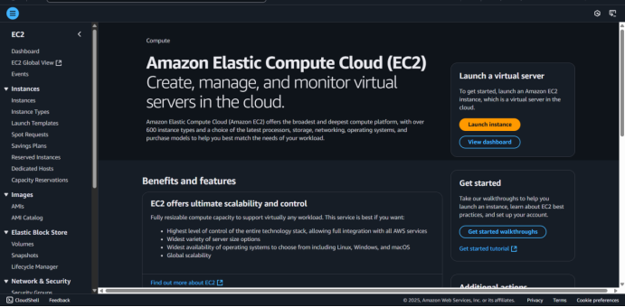
Navigate to the AWS Management Console and search for "EC2" in the
search bar at the top.
Step 2: Launch an Instance
Click on the "Launch Instance" button to begin the EC2 instance setup
process.
Name and Tags
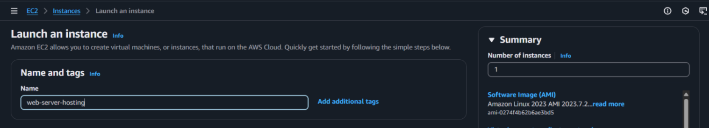
Enter a name for your instance to easily identify it in the AWS Console.
Selecting Amazon Machine Image (AMI)
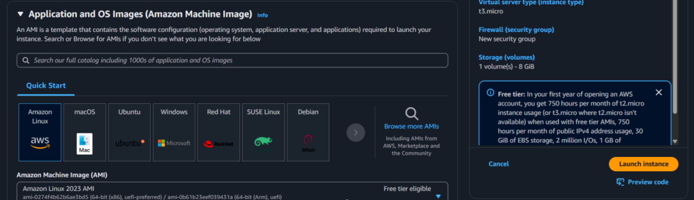
Choose Amazon Linux 2 AMI as the operating system for your web server.
Instance Type
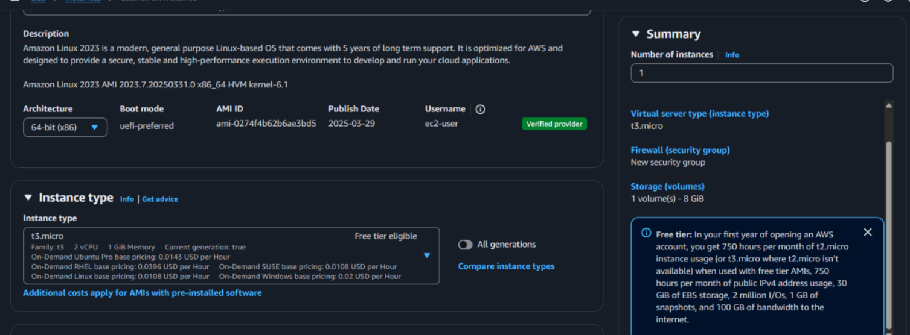
Select t2.micro which is eligible for the free tier.
Key Pair (Login)
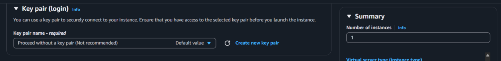
Create a new key pair or select an existing one. This will be used to
securely connect to your instance.
Firewall (Security Group)
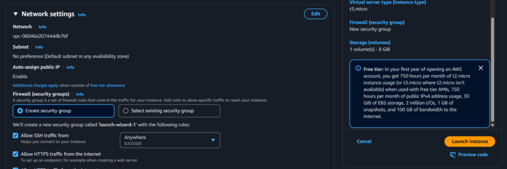
Create a new security group allowing HTTP (port 80) and SSH (port 22)
traffic.
Configure Storage

Use the default storage configuration (8 GB gp2 SSD).
Launch Instance
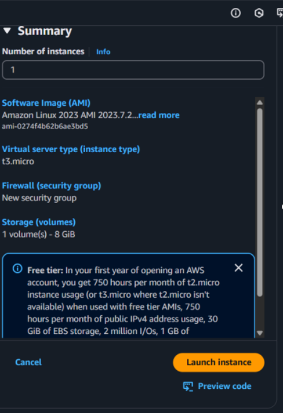
Review your instance configuration and click "Launch Instance" to create
it.
Step 3: Instance Launched Successfully
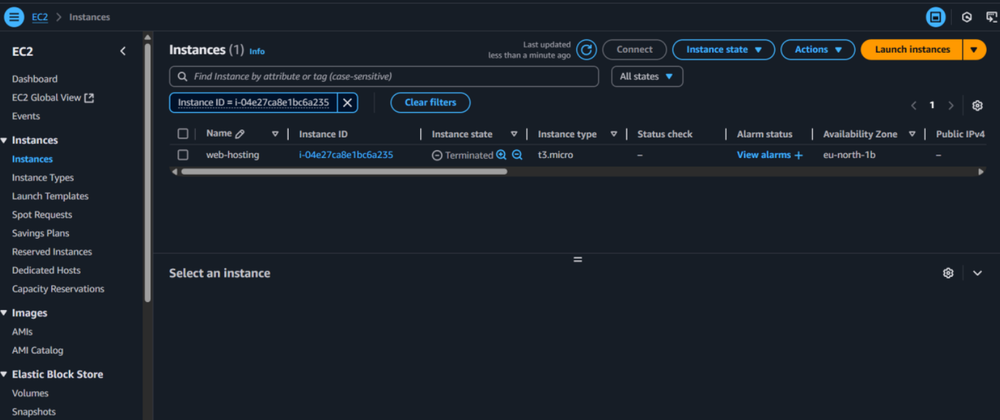
Verify that your instance is running in the EC2 dashboard.
Step 4: Connect to the Instance
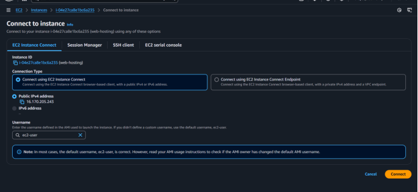
Select your instance and click "Connect" to access the connection
options.
Step 5: Install and Configure Web Server
Once connected to your instance via SSH, execute the following commands:
Update System Packages
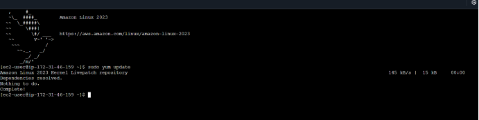
sudo yum update
Install Apache Web Server
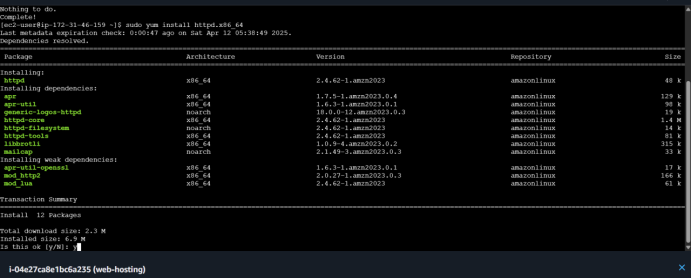
sudo yum install httpd.x86_64
Start Apache Service & Enable Apache to Start on Boot
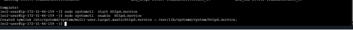
sudo systemctl start httpd.service
sudo systemctl enable httpd.service
Step 6: Verify Web Server is Running
sudo systemctl status httpd.service
Step 7: Access Web Server Through Browser
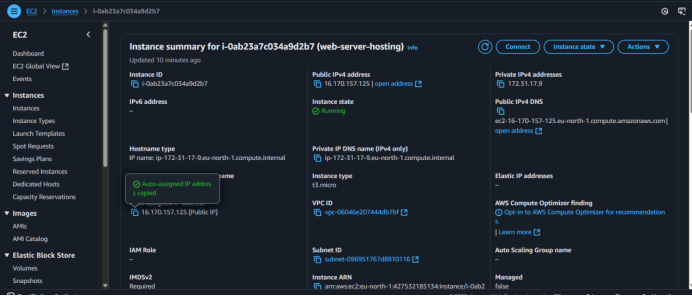
Copy the public IP address of your EC2 instance from the instance
details page.
Step 8: Web Server Successfully Deployed
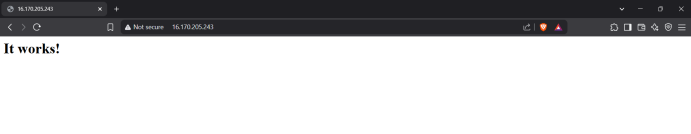
Paste the IP address in a web browser to see the default Apache web
page, confirming that your web server is successfully deployed.
Conclusion
You have successfully deployed a web server on AWS EC2 using Apache. The
server is now accessible via its public IP address and will
automatically start when the instance boots up.